Minibeasts & Butterflies Discovery Sheet
If you look really carefully among the heather glades, under fallen leaves, and around flowering shrubs, there are hundreds of fascinating little creatures living on our Commons. How many can you tick off today?
Insects & Minibeasts
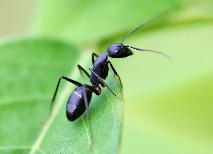
Watch for busy trails along sandy footpaths and dry tree roots.
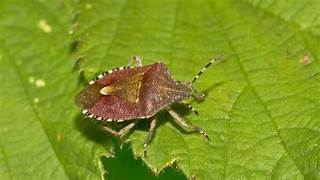
Busy foraging among purple heather, clover, and blackberry blossoms.
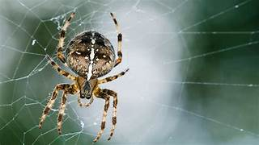
Yellow and black stripes; important garden predators and pollinators.
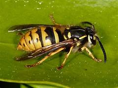
Look for circular orb webs spun between bracken stems and gorse bushes.
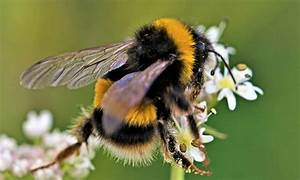
Shaped like a medieval knight's shield; resting on sunny hazel leaves.
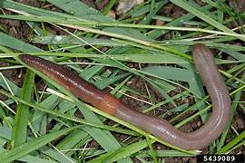
Found under damp autumn leaves and moist soil along wooded trails.
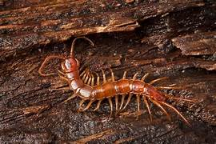
Basking on warm sandstone rocks around Wellington Rocks.
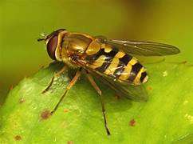
Looks like a wasp but harmless; hovers motionless in mid-air!
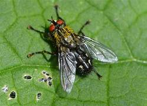
Fast-moving hunter with dozens of legs, hiding in dark rotting bark.
Butterflies

Velvety black wings with bright orange-red bands and white tips.
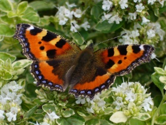
Orange and black pattern with a lovely row of blue spots on wing edges.
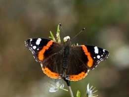
A champion migrant that flies all the way from North Africa to the Commons!
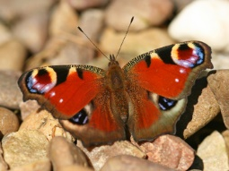
Spring visitor with vivid orange wingtips on the males; loves cuckoo flower.
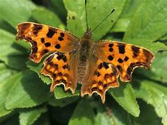
Bright butter-yellow wings shaped just like leaves when closed.
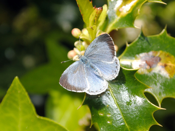
Dappled brown and cream; dancing in sunny woodland clearings.
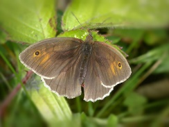
Brilliant sky-blue wings fluttering over grassy open heathland.
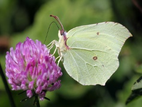
Ragged wing edges and a tiny white comma mark on the underside.
Did you find a minibeast that isn't on this sheet?
Draw a picture of what you found below, or write down where you saw it!